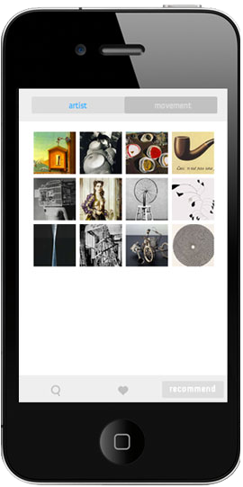
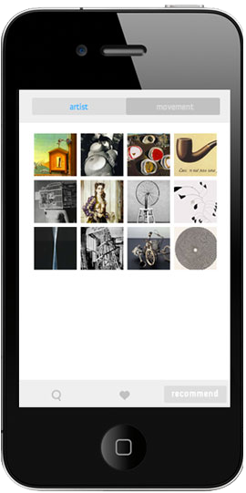

Tune Art
2013
web-based mobile application, graphic design
Tune Art is a mobile application where you can search artworks that you are interested in and save the ones you like on to the app's "My List" tab. There is a recommendation of artists and artwork based on the art you save on your "My List".
My goal is to contribute in making art more accessible and extend the boarders of art to everyday life by exposing the closed art market through a portable mobile application.
Application can be tested here as a web version.
Search results will appear among these artists:
Breton, Beuys, Calder, Dove, Duchamp, Fernandez, Giacometti, Gorky, Kaprow, Kelly, Louis, Modigliani. Magritte, Picasso, Reinhardt, Rodin, Rothko, Warhol
Software: HTML5, CSS3, Javascript
 
